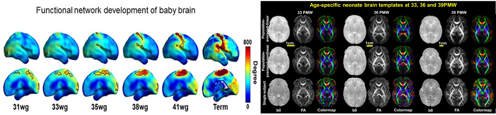

Details of the Data
This dataset below includes high-quality and high-resolution in vivo diffusion MRI (all DTI-derived data, with imaging resolution 1.5x1.5x1.6mm3 before zero-padded reconstruction and average=2) and resting-state fMRI (with imaging resolution 2.4x2.4x3mm3 before zero-padded reconstruction) of baby brains.
DTI and T1 weighted image dimension: 256x256x60 (zero-padded); Resolution: 0.6563x0.6563x1.6 mm3
Rs-fMRI image dimension: 128x128x30 (zero-padded); Resolution: 1.3125x1.3125x3 mm3
Registration is required for downloading the dataset.
Publication
Ouyang, M., Jeon, T., Sotiras, A., Peng, Q., Mishra, V., Halovanic, C., Chen, M., Chalak, L., Rollins, N., Roberts, T.P. and Davatzikos, C., Huang H, 2019. Differential cortical microstructural maturation in the preterm human brain with diffusion kurtosis and tensor imaging.
Proceedings of the National Academy of Sciences 116(10): 4681-4688
[Journal]
Yu Q, Ouyang A, Chalak L, Jeon T, Chia J, Mishra V, Sivarajan M, Jackson G, Rollins N, Liu S, Huang H, 2016. Structural development of human fetal and preterm brain cortical plate based on population-averaged templates. Cerebral Cortex 26(11): 4381-4391.
[Journal]
Feng L, Li H, Oishi K, Mishra V, Song L, Peng Q, Ouyang M, Wang J, Slinger M, Jeon T, Lee L, Heyne R, Chalak L, Peng Y, Liu S, Huang H, 2019. Age-specific gray and white matter DTI atlas for human brain at 33, 36 and 39 postmenstrual weeks. Neuroimage 185: 685-698.
[Pubmed]
Cao M, He Y, Dai Z, Liao X, Jeon T, Ouyang M, Chalak L, Bi Y, Rollins N, Dong Q, Huang H, 2017. Early development of functional network segregation revealed by connectomic analysis of the preterm human brain. Cerebral Cortex 27(3): 1949-1963.
[Pubmed]
Acknowledgement
This study was supported by NIH Grants R01 MH092535 and R01 MH092535-S1.
Data Download
To download the data, please fill out this google form. Download link will be available after.